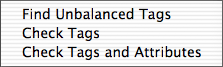

 The menu contains three functions for validating the code. These three functions are of varying complexity and therefore takes different amount of time. Unfortunately Alpha is not fast enough to validate the HTML code instantly. Checking both tags and attributes in large documents takes time!
If there are any errors found a window is opened displaying all errors. Use the up and down arrows to browse this window and return to jump to the error in the code.
Some general tips when correcting errors:
| ELEMENT may not have a closing tag. | A closing tag for an element which may not have one has been found, like </BR>. |
|---|---|
| ELEMENT1 must be closed before ELEMENT2. | A closing tag is missing, like in this case: <B><I></B>. |
| Closing ELEMENT tag without a matching opening tag. | A tag </ELEMENT> has been found with no corresponding <ELEMENT>. |
| The ELEMENT tag is not an empty element tag. | A tag of an empty element, such as <br>, has been found in an XHTML document but the tag doesn't use the minimized syntax <br/>. (This is strictly not an error, since <br></br> is valid in XHTML, but the minimized form is prefered for compatibility with some browsers.) |
| No element name in tag. | Alpha could not find the element name in a tag. |
Alpha can only validate the code according the three HTML 4.01 document type declarations. If there is an HTML 4.0 or HTML 4.01 document type declaration in the beginning of the document Alpha will use it to determine which elements are legal. Currently all document type declarations other than HTML 4.0 and HTML 4.01 are ignored. Alpha treats HTML 4.0 and HTML 4.01 declarations as equivalent and validates according to HTML 4.01. If there is no document type declaration in the beginning of the document Alpha will make an intelligent guess and use either the transitional or the frameset declaration. General error messages are:
| No element name in tag. | Alpha could not find the element name in a tag. |
|---|---|
| Unmatched <. | A single < has been found. |
| ELEMENT is unknown. | An unknown HTML element not part of HTML 4.01 or XHTML 1.0 or 1.1 has been found. |
| ELEMENT may not be used with the strict DTD. | ELEMENT is part of HTML 4.01 or XHTML 1.0 but may not be used if you use the strict document type declaration. |
| ELEMENT may mot have a closing tag. | A closing tag for an element which may not have one has been found, like </BR>. |
| The ELEMENT tag is not an empty element tag. | A tag of an empty element, such as <br>, has been found in an XHTML document but the tag doesn't use the minimized syntax <br/>. (This is strictly not an error, since <br></br> is valid in XHTML, but the minimized form is prefered for compatibility with some browsers.) |
| Closing ELEMENT tag without a matching opening tag. | A tag </ELEMENT> has been found with no corresponding <ELEMENT>. |
| ELEMENT1 must be closed before ELEMENT2. | A closing tag is missing, like in this case: <B><I></B>. |
| Text after </HTML>. | No text may appear after the final </HTML> tag, except for comments. |
| ELEMENT1 may not contain ELEMENT2. | ELEMENT2 may not appear as a child element of ELEMENT1. For example <TABLE><B> is invalid. TABLE may not contain B elements as child elements. |
| ELEMENT may not contain text. | Plain text has been found inside an element which may not contain text. Example: <UL>text. UL may only contain LI elements. |
| ELEMENT1 may not appear anywhere inside ELEMENT2. | The error messages above only concern the case when an element may not be a child element of another element. This error message tells that ELEMENT1 may not appear inside ELEMENT2 at any level of nesting. For example <A><B><A></A></B></A> is invalid. A elements cannot be nested at any level. |
| The ELEMENT tag must be in lowercase in XHTML. | In XHTML all tags must be in lowercase. |
| In addition there are a large number of error messages specific to an HTML element. | |